1 - Automation
/ɔːtəˈmeɪʃ() — noun
Tomorrow Inc.
Tomorrow Inc. is a leading competitor within automation. We have created and pushed out many leading products that help other companies within many different fields manage processing on another level. We are pioneering the future of tomorrow too!
What is automation
Automation is a process where a company (and other entities such as computers) create a way of making something efficient without the need of human assistance. For example, the toothbrush you use to brush your teeth everyday has been through an automated process where machines are used to create them by the million instead of hundreds of thousands of humans chiselling away at plastic. Automation is commonly used to mass produce a product. But, automation is also in use in programming. Radar technology in cars are equipped to detect moving objects within the vehicles proximity (this is also related to AI, but that's another topic!). This process is automated to continuously detect everything that's happening while you are doing the driving. Automation increases productivity.
What or who has automation contributed to or what will it contribute to?
The question is a big one and it has hundreds of answers. Automation has made a massive contribution in the car industry. Without automation, many of the products we have today would have taken a couple more decades to complete. Processors in our computers are expensive, but automation has allowed mass-production of these resources. Mining operations around the world are generally automated with humans more or less being on rigs due to maintenance. A key player in the automation industry is China. China is one of the hot hubs where companies and individuals can order products for mass-production. Take for example the iPhone (an Apple product), every single day approximately 900,000 iPhones (As of 2017) are manufactured in a automated process. Automation will contribute to a more connected world. Everyday things will more or less be seemlessly connected to encourage increased levels of human productivity and efficiency.
Education and future jobs
To protect future generations from being behind and possibly not getting jobs, education systems worldwide will have to be reformed to fit the standards that are being set. Schools need to better prepare students for a future where humans are coexisting in a world where robotics will be widespread. It isn't only the companies that need to change their strategies to better prepare for the future, but education as a whole needs to be molded again.
Future products
The depiction seen to the left is an egg shaped product. This product is unique to each person who has one. What this egg-shaped product does is automates your own. You control and shape how this product will work, what it'll do when you wake up, or what conditions (temperature, etc.) you want in the house you live in. Yet this product doesn't exist? This is a product that will likely exist in the coming years. It will give you more time to do the things you really need to do while it automates the control of your house. You'll tell that every day at 8 AM you'd like it to brew your coffee.

Home Automation
By the year 2050, at least 40% of all jobs will have been automated by robots. Your homes will be automated to make more energy efficient decisions for you, and increase productivity (when you won't be the one needing to flick off that light switch you left in the basement). One other important thing in your life that will be changed is how you manage your day! As computing advances, so will automation. This will lead to special software personalized to your characteristics to be created which will make your life even more productive.
2175
2175 will be the year where the majority of processes such as driving, housecare and daily life will be impacted and changed. Many of the jobs that exist today will not replace humans with robots but humans will work beside robots. By this time education systems in most countries around Earth will have been reformed and reformed to create a new guide towards a technologically advanced civilization and a world where technology and automation will be as important as electricity.